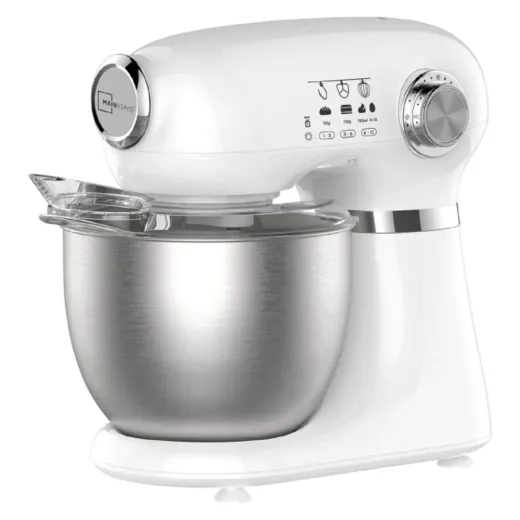
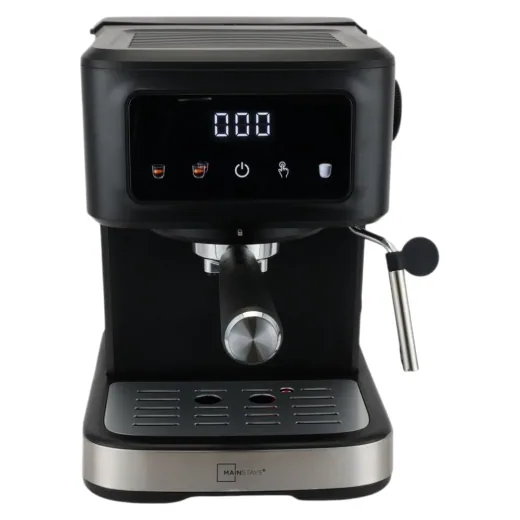
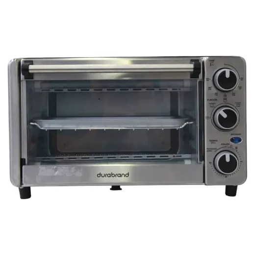
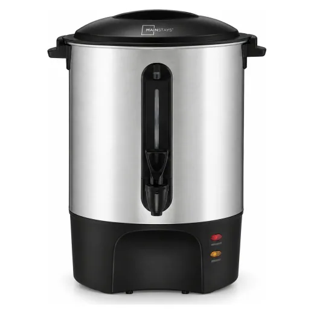
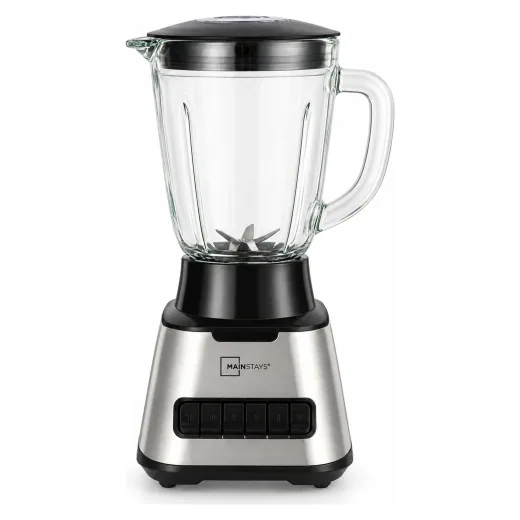
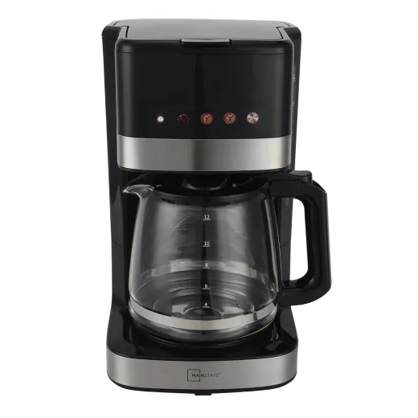
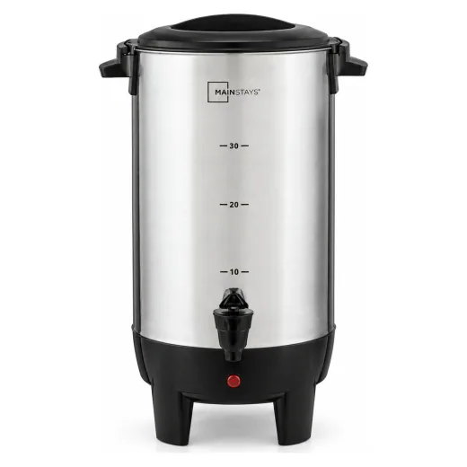
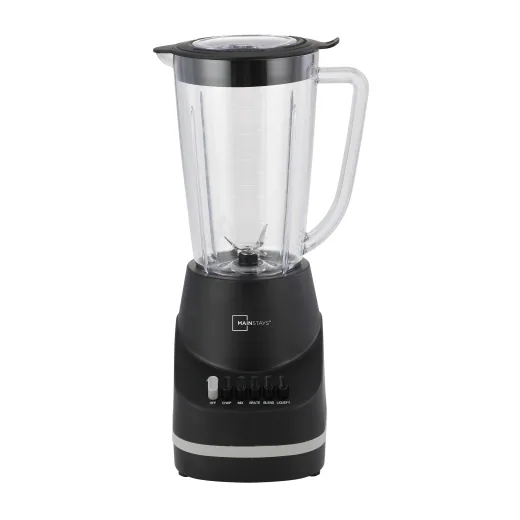
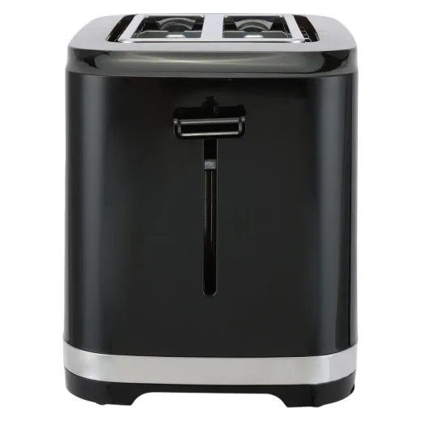

Inicio › Licuadoras y cafeteras

Mainstays · Modelo 120VL
Batidora de Pedestal Mainstays 350w capacidad 5 L
L 1,995
En Walmart
Precio en cada tienda
| Tienda | Precio | Antes | Disponibilidad | |
|---|---|---|---|---|
| Walmart | L 1,995 | — | Disponible | Ver en tienda › |
Precios referenciales tomados de cada tienda el 14 de noviembre de 2026. El precio válido es el que muestra la tienda al comprar.
Otros licuadoras y cafeteras Mainstays

Mainstays Cafetera Espresso De 1 5 LtsL 1,800.25En Walmart
Horno Tostador Mainstays 4 RebanadasL 1,395En Walmart
Percoladora Mainstays capacidad 60 TazasL 1,395En Walmart
Licuadora Mainstays con jarra de vidrioL 895En Walmart
Cafetera Mainstays programable de 120V con capacidad de 12 tazasL 795En Walmart
Percoladora Mainstays capacidad de 30 tazasL 795En Walmart
Licuadora Mainstays Jarra Plástica 6 VelocidadesL 695En Walmart
Mainstays Tostadora De 2 RebanadasL 545En Walmart